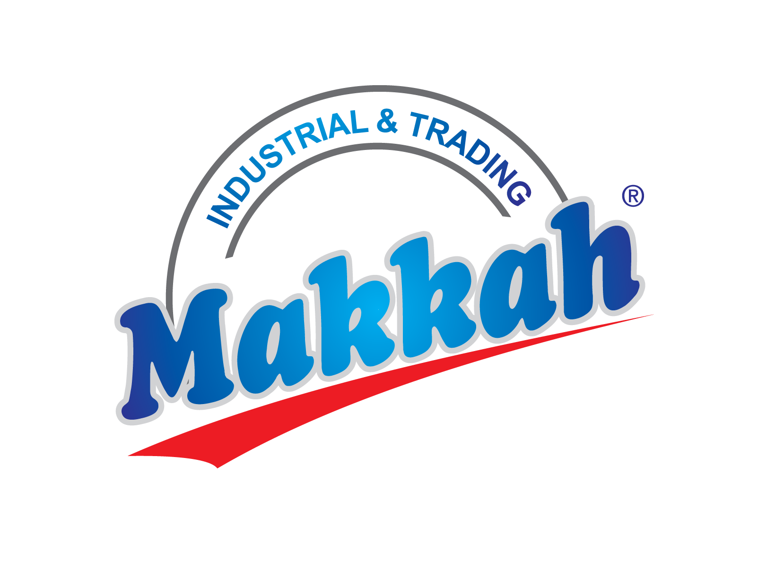
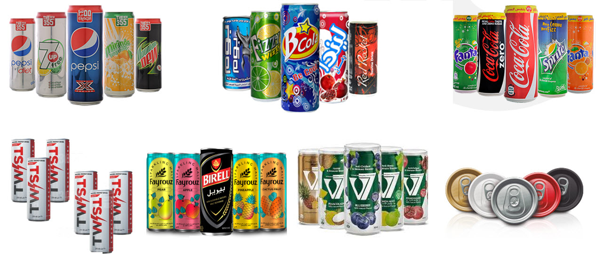

One of the world’s leading manufacturers of aluminum beverage cans, recognized for quality, innovation, and global reach
MSCANCO is a leading company in Egypt specializing in the manufacture of high-quality aluminum beverage cans. We are committed to innovation, precision engineering, and delivering reliable solutions that meet the needs of our global customers.

Our operations cover the full can manufacturing process, ensuring consistent quality, reliability, and timely delivery to meet our clients’ demands.
MSCANCO specializes in the production and manufacturing of high-quality aluminum beverage cans. We focus on precision, efficiency, and meeting the highest industry standards to serve global beverage brands.
